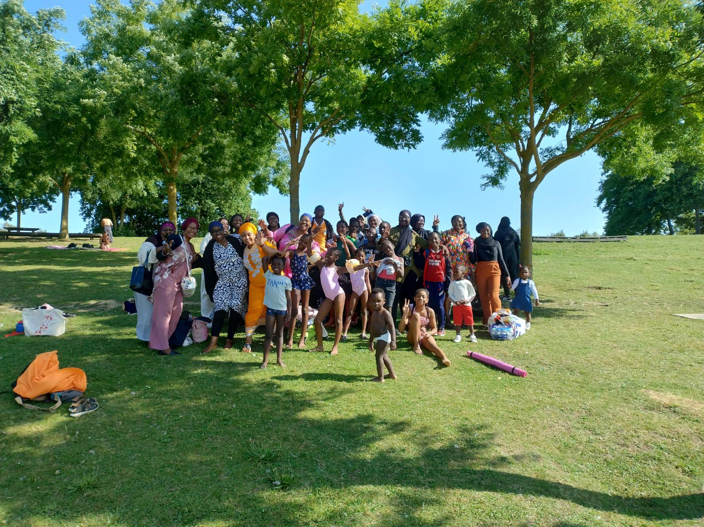
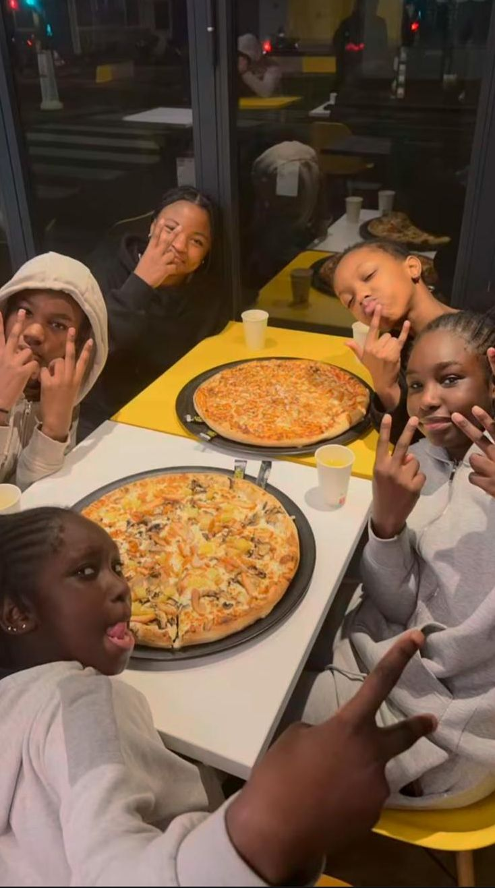

Jeunes et ambitieux, pour nous & par nous
Association du quartier de l’Amiral Roussin, Oxyjeunes accompagne la jeunesse avec des actions solidaires, éducatives et citoyennes, portées par et pour les habitants.
Nos pôles d’action
Notre impact
20+
maraudes
10+
sorties jeunes
3
Rencontres Pro
1
projet international
Témoignages
Grâce aux sorties et au soutien, mon fils a repris confiance et de nouvelles habitudes positives.
— Aïcha, maman du quartier
Participer aux maraudes m’a montré la force du collectif. On peut tous faire une différence.
— Ilies, bénévole
Les rencontres métiers m’ont donné des idées concrètes pour mon orientation.
— Alpha, lycéen
En images

